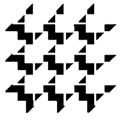

General Project Information

Name: Nicole Friedman
Program: DIMACS REU 2026
Mentor: Prof. Shahrzad Haddadan
Project: Mallows Model for Choice Modeling
Email: Nicole.Friedman@tufts.edu
Home Institution: Tufts University 🐘
Acknowledgements
This work was carried out while the I was a participant in the 2026 DIMACS REU program at Rutgers University, supported by NSF grant CCF-2447342
I would also like to thank Professor Shahrzad Haddadan for providing mentorship, as well as Dr. Lazaros Gallos, Dr. Lawrence Frolov, Dawn Bryant, and the rest of the rest of the DIMACS REU team for their guidance and support throughout the REU Program. Finally, thank you to Rutgers University and Charles University for their facilities.
About Me
I am a student of Applied Mathematics and Computer Science currently studying at Tufts University in Medford, Massachusetts, graduating in May 2027. Though Math and CS are independently wonderful disciplines, I find that something fascinating about their unique intersection. Computational tools allow us to find answers embedded in large data sets that we formerly didn't have access to, while mathematics can make procedures rigorously provable. Better yet, this combination can help solve questions with social impact, such as fair resource allocation, the kidney exchange problem, and much more!
During and following the DIMACS REU, I have been focused on expanding assortment optimization algorithms under the Top-k Mallows Model, which is a choice model that captures substitution behaviors seen by customers. I have been enjoying working in the field of information systems, though I am open to exploring algorithmic applications in other fields.
When I am not studying, you can find me holding office hours for my Intro to CS students, playing in the Tufts Symphony Orchestra, and spending time engaging with the Somerville community at my bakery job.
Project Description
Title: Mallows Model for Choice Modeling
The Mallows Model is a probabilisitc distribution that relates a permutation to a known center \(\tau^*\). For some concentration parameter \(\beta\), we find that the probability of a permutation \(\tau\) is given by $$P(\tau)\propto e^{-\beta \cdot d(\tau, \tau^*)}$$ where \(d(\cdot,\cdot)\) denotes the Kendall-Tau Metric.
There is a notable amount of literature regarding the Mallows Model in the full permutation setting, but oftentimes assuming that a set of data is completely ranked both across collected data and customers diminishes the realism of the model. Thus, we turn our attention to the Top-\(k\) Mallows Model, which leaves all elements after the top \(k\) unranked and thus uncomparable.
Under the Top-\(k\) model, the incomparable portion of the set and need for an updated Kendall-Tau Metric introduces new structural complexities to the distribution and its corresponding algorithms. In particular, I aim to help construct efficient algorithms solving Assortment Optimization problem, which finds the assortment of elements that maximizes the expected revenue. That is, we aim to solve $$\max_A\sum_{a\in A} r_a \cdot P(a|A \cup \varnothing)$$ where \(A\) is an assortment, \(r_a\) is the cost of element \(a\), and \(\varnothing\) represents the no-purchase option.
Weekly Log
Week 1: May 26th–May 31st
Since this was the first week of the program, the main focus of the week leaned more towards understanding preliminaries and the general ideas forming the foundation of the project, as well as working to form social connections with my cohort. I also met with my advisor for the first time, and we discussed the Generalized Mallows Model and our goals for augmenting existing algorithms to solve problems in the Top-K setting.
As someone who primarily uses C or C++ for programming, I worked to improve my familiarity with Python by implementing a program that computes inversion tables given a permutation and a center, as well as the inverse operation. I initially wanted to prove that we can recover a unique permutation from a given inversion table by showing that the inversion table mapping is bijective, but I realized it would be simpler to find a deterministic inversion algorithm. The rest of the week was spent working on setting up this website, doing some background reading on the Mallows Model, preparing my introductory presentation, and working on a few additional releveant implementations.
On the social end of things, I met a lot of the cohort on move-in day, and everyone is quite personable. We've spent some time playing cards, going for exploratory expeditions, and throwing around various projectiles (primarily frisbees). It's also fun to find people who are happy to talk about random mathematical or computational topics — it's not every day that you can debate the merits of Lebesgue integration! I look forward to getting to know people better over the next few weeks and continue exploring campus.
Week 2: June 1st–June 7th
I started this week by watching the sunrise from the CoRE building and finished implementing the computation of inversion vectors in the Top-\(k\) setting, which is the backbone the Kendall-Tau Metric used in the model. I also gave a brief presentation providing background on and motivation for the study of the Top-\(k\) Mallows Model and its corresponding research questions.
The rest of the week was spent working on migrating some structural properties of the Generalized Mallows Model to the Top-\(k\) setting and attempting to prove said properties under the model constraints.
Week 3: June 8th–June 14th
This week, I worked on proving structural lemmas proposed in Désir et al. translated to the Top-\(k\) setting. The structural complexities introduced by incomparability require significantly more case-analysis than in the Generalized Mallows Model.
Later in the week, I met with my mentor, and we discussed the \(\frac{1}{\varepsilon}\) polynomial time approximation scheme (PTAS), with the particular interest focusing on the cases where for \(M=\lceil \frac{1}{\varepsilon} \rceil\), \(|M\cap\bar\tau|\neq \emptyset\), i.e. when our assortment size considers elements from the inorderable portion of the center.
Week 4: June 15th–June 21st
I continued working on developing and proving propositions about structural properties of the model. In the realm of assortment optimization, we have discovered that optimal assortments are not self-contained within subsets of the universe of products, making developing an algorithm much more complicated. Rather than thinking about the model generally, I am focusing more of my attention on the realm of properties we can use to help with assortment optimization.
One of my roommates introduced me to the dating simulation game called Date Math, which is definitely worth checking out if you want a good laugh.
Week 5: June 22nd–June 28th
The primary sources of literature regarding the problem of assortment optimization focus on the Generalized Mallows Model, and those without additional restrictive structural assumptions base their algorithm on clever partitioning schemes. However, since we have a natural partition with induced incomparability, we need to continue to evaluate the structural properties allowing us to work within assortments. In addition to computing choice probabilities, the individual revenues of products require careful consideration for computing which products can be discared and which products are necessary candidates for the optimal assortment.
I've also been trying to learn some basic phrases in Czech, which has been a bit more successful than I anticipated. I still don't have the diacritical marks down, but my pronunciation is boarding on passible. Hopefully the folks at Charles University aren't too offended by my bad accent.
Week 6: June 29 - July 5
This week, I finished cleaning up many of my existing proofs while isolating structural lemmas to improve logical modularity. We are still working on determining properties necessary for an assortment optimization algorithm that is sufficiently accurate without requiring any assumptions regarding the placement of the no purchase option.
Week 7: July 6 - July 12
We started working on our proof for our assortment optimization algorithm in the case that the no purchase option is ranked above the incomparable portion of the center. The case split is a bit more nuanced than previously studied cases, requiring us to reevaluate the bound we have on our approximation.
Week 8: July 13 - July 19
This week, I met with my PI a few last times to discuss our approximation algorithm for when the no purchase option is ranked in position \(k+1\). We proposed adapting the commonly used bijection argument to a general non-injective mapping to find a bound for the probability that an unranked element will become the choice to use to bound part of our case decomposition.
I also gave my final presentation discussing Assortment Optimization under the Top-k Mallows Model and our exact algorithm. Over the two presentation days, I also had the pleasure of listening to the presentations of other REU participants. Shortly after, we celebrated by paying a visit to the restaurant Destination Dogs, and the next day, I crossed the Atlantic Ocean for the first time on the way to Prague! I am already blown away by the architecture and impressive public transit and am excited to see more in the coming weeks.
Week 9: July 20 - July 26
It's the first week of the Prague REU exchange program, where we have been learning about graph theory and combinitorics. Aside from working on my report, I also prepared and delivered a board talk, diving a bit deeper into the mathematics underlying the Mallows Model. Martin, Ryan, Jakub, and Larry also gave some interesting talks about algorithms, algebra, and physics!
Week 10: July 26 - July 31
We've reached the final week of the program. During the Midsummer Combinitorial Workshop XXX +1, we've been celebrating Jarik Nešetřil's birthday, discussing a lot of graph theory, and wondering about the implications of AI on the job market. I've also had the chance to explore the city a bit more. I'm grateful for this REU experience and am exited to continue my research in the coming months.
September 2026
I have continued research with Dr. Shahrzad Haddadan and Dr. Chris Coscia (Tufts University) through a bachelor's thesis. We have finally proved a PTAS with suspected runtime \(O(n^3/\varepsilon)\) with a guarantee \(\mathcal R(A^\varepsilon)\ge (1-4\varepsilon \mathcal R(A^*))\). We have some more work to do, but we are working towards publication of this algorithm.